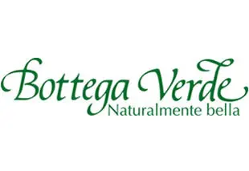
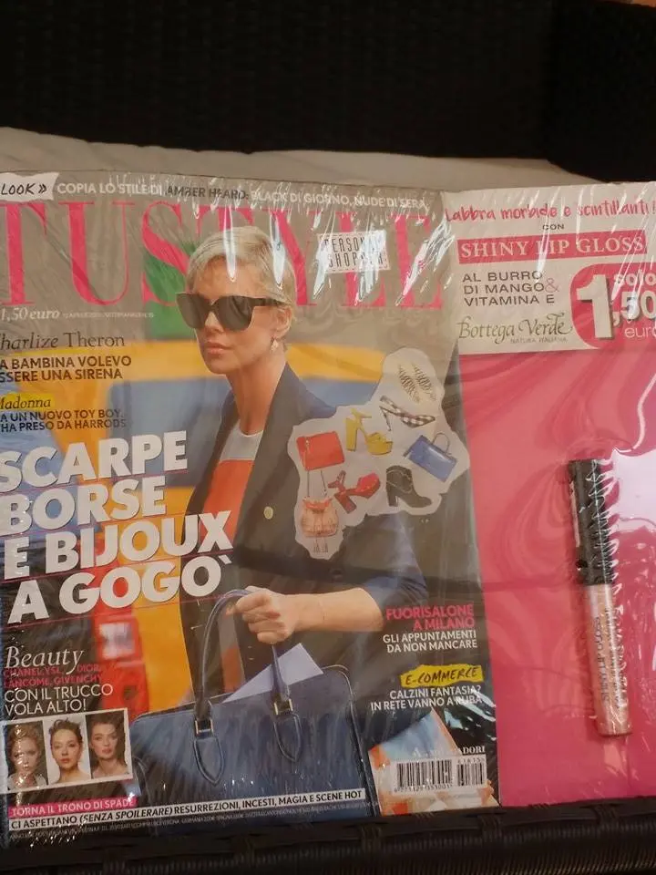
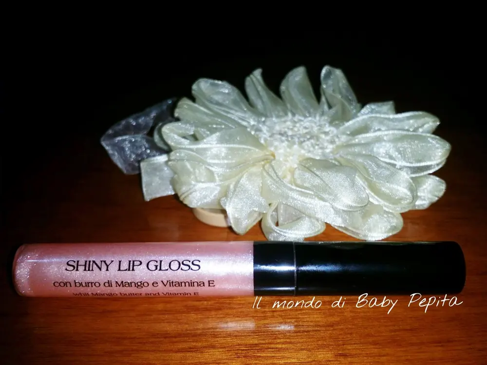
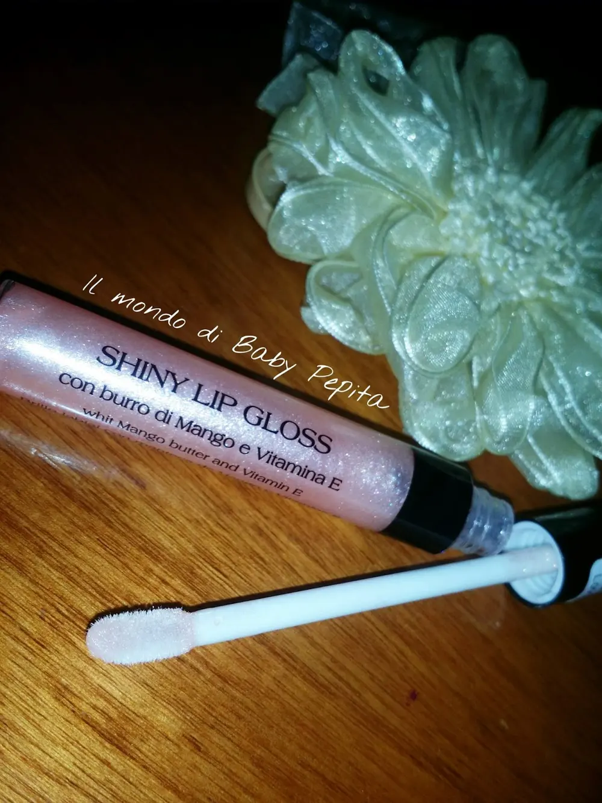
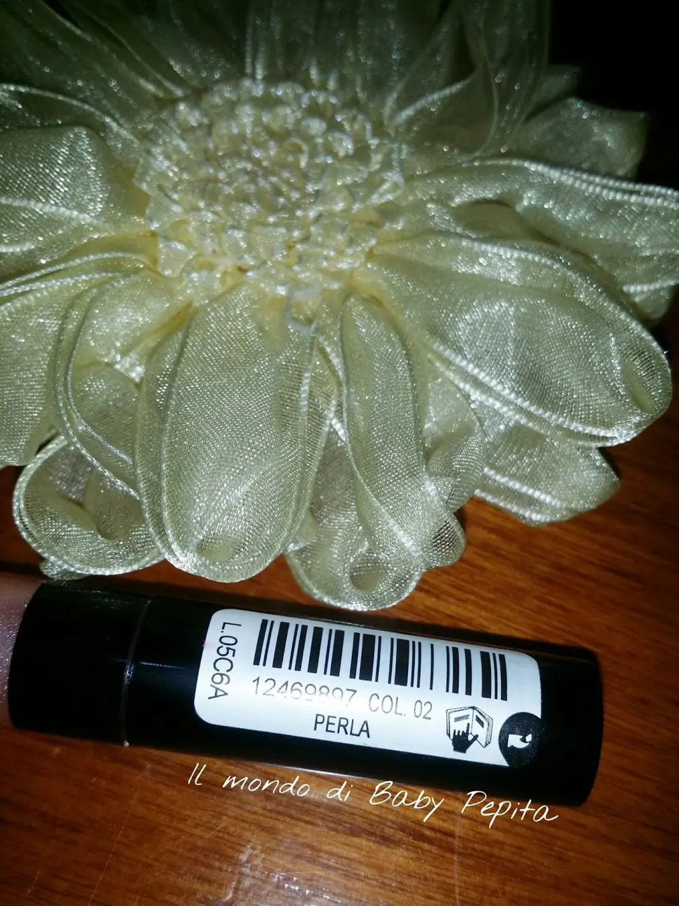
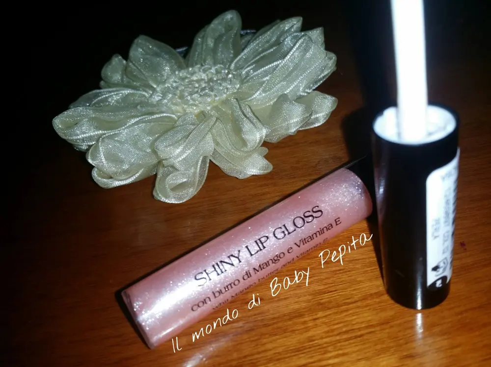
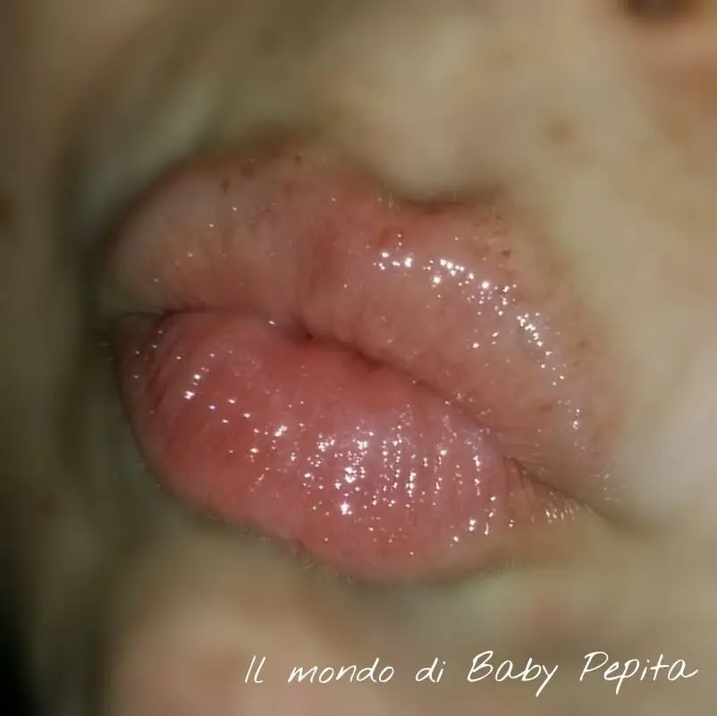
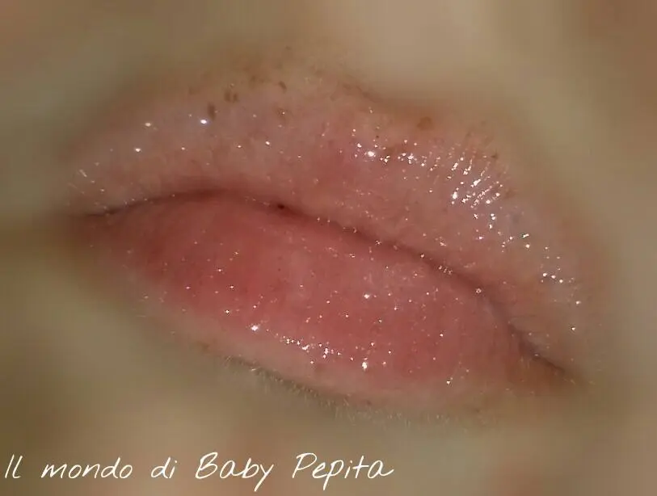
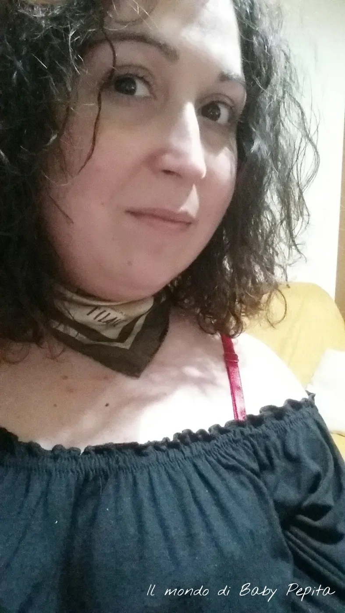

Bottega Verde - lip gloss con burro di Mango e Vitamina E

Oggi parliamo di Bottega Verde, nasce come erboristeria nel 1972 a Pienza, nel cuore della Toscana più vera e naturale. Amante della natura e dei prodotti naturali, rileva la piccola erboristeria di Pienza dedita alla produzione artigianale di cosmetici a base naturale.Da quel momento, i valori di un’azienda di famiglia italiana,uniti a quelli di una bellezza naturale e sincera si consolidano in una grande storia di successo.Oggi Bottega Verde formula, produce e distribuisce i propri prodotti attraverso la prima catena di cosmetica mono marca in Italia: negli oltre 40 anni della sua storia ha dato un nuovo senso alla frase “dal produttore al consumatore”. Molto importante è dunque il suo contributo per le donne che cercano bellezza nei prodotti naturali.
Qualche giorno fa, tale azienda ha fatto un omaggio - regalo a tutte noi donne, mettendo come, appunto "un omaggio" di uno dei suoi lip gloss di Bottega verde - Shiny lip gloss con burro di Mango e Vitamina E affiancando una rivista con TV STYLE.

Sono stata fortunata che anche nella mia città è arrivata questa iniziativa (spesso e volentieri quando si tratta di cose così molte riviste e giornali danno il consenso solo ad alcune città italiane, questa volta invece è arrivata un pò dappertutto).Ho approfittato dunque di questa cosa, poichè conosco la qualità del prodotto e vedendolo a quel prezzo non potevo farmelo scappare.L'unico rammarico che ho trovato soltanto una tonalità, inizialmente credevo in un rosa pallido ma invece stendendolo sulle labbra è proprio trasparente glitterato.Ma va bene comunque. .La rivista stava con tutto l'omaggio 1,50 €considerando che solo il lip gloss comperandolo in bottega, quindi in sede, costa 8,99 € (ora anche lì in offerta a 5,99€).

Si presenta così, in un tubicino trasparente e il tappo nero che riprende anche l'inizio del tubetto.

Il pennello è quello a spugnetta, è molto comodo, abbastanza flessibile e non troppo spugnoso per cui si riesce a prelevare la giusta quantità di prodotto senza esagerare.

Il colore che ho io è appunto "perla", un leggero rosa che dona colore in tutta trasparenza alle labbra che si accendono di brillantezza spettacolare.

Nel tubetto il colore appare come un rosa chiaro ma sulle labbra è praticamente trasparente ma ha una luminosità intensissima e riempie le labbra di bellissimi glitter che, seppure non eccessivi, danno ancora più luce.

Adatto quando ci si concentra molto di più sugli occhi e puntando tutto sullo sguardo voglio lasciandole labbra nude ma luminose.

La durata, come tutti i gloss, non è paragonabile a quella di un rossetto ma resiste comunque 2 o 3 ore. Un altro aspetto piacevole di questo lucidalabbra è che non appicca le labbra come succede con altri gloss che ho utilizzato.
